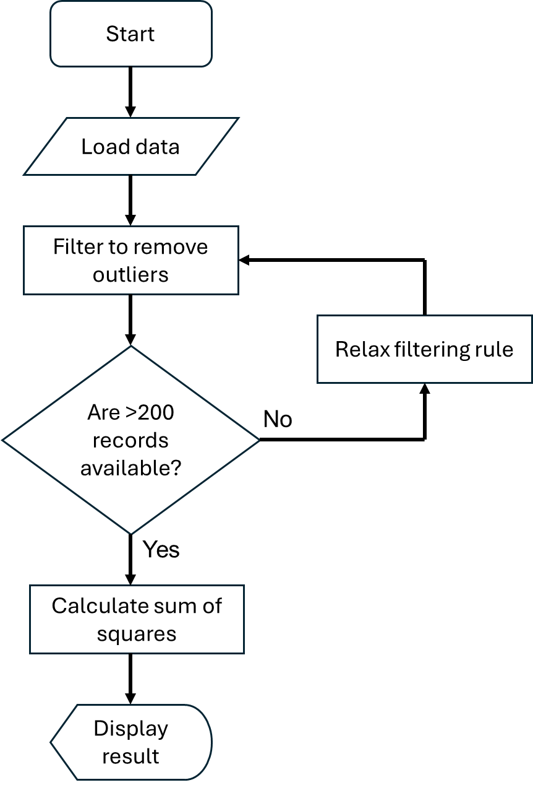
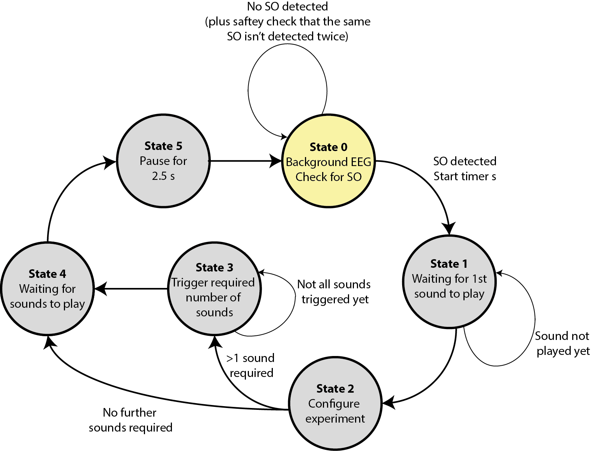

6.9. Design patterns¶
Once you have data, stored in objects and variables, and ways to manipulate data in methods and functions, you fundamentally have what you need to start building up complex programs. In most cases this probably starts by thinking about the data - how it is best stored, what objects and methods do you want? As we saw when introducing objects you can use the type system to help you avoid making errors.
We also introduced software architecture briefly. You do need to design a program. In the same way that you wouldn’t build a house without having plans and drawings in advance, it’s extremely hard to write programs with millions of lines of code without some plans and drawings in advance.
UML (Unified Modeling Language) is one widely used approach to visualize a program structure, but goes beyond the scope of this course. We thus won’t say too much about this. A lot in this area comes from gaining hands on experience, and seeing what works and what doesn’t work for your needs. Also, in many cases in practice you’ll be working on a code base with already exists, improving it and adding features, rather than starting from a blank slate.
However we want to highlight two common design patterns, that is, ways of thinking about how the code is structured. These can help you start thinking about how you might structure your code, and you can then go further in your further reading if you desire.
6.9.1. Flow charts¶
The programming we’re going to look at is known as imperative programming. The code execution may jump from place to place as we use different functions and methods, but fundamentally the code executes line by line starting from the top of the code file. This means that flowcharts tend to naturally fit into representing the functionality we need. A simple example flowchart is shown below.
{kind=link}

This is quite a high level flow chart. You can of course add as many details, whether that be steps, or details on what the data looks like at each stage. Most undergraduates are already familiar with flow charts, and so we won’t give more details here other than to note that there is an international standard (ISO 5807) for which shapes should be used in a flow chart.
6.9.2. State machines¶
A second common design pattern, and one which in my experience is overlooked by undergraduates, is state machines. (In my experience most undergraduates tend to go straight to flow charts.)
You’ll actually encounter state machines in your digital electronics courses. They are commonly used in the design of digital hardware. They can be just as useful in the design of software.
Here you think about the discrete states that program might have, and what triggers the state to change. For example, there might be a wait state while waiting for some user input or a file to finish downloading. A simple example is shown on the state diagram below.
{kind=link}

Here EEG refers to the data that is being collected in real-time from a device connected to the computer. SO refers to a specific feature in this data that we want to detect. If an SO is detected, we want to play a fixed number of sounds, after some delays. The system starts in State 0 and then moves round once an SO is detected. (This is a real example based on some of our previous research code available here. Note that this was coded in Matlab rather than in one of the languages we’ll use in this course.)
There are dedicated libraries in Python to help with the creation of state machines. In general, you would have an object (defined via your own class) which stores the current state and next state, and then methods that implement the transitions. If useful, you can see an example here which doesn’t use additional libraries.